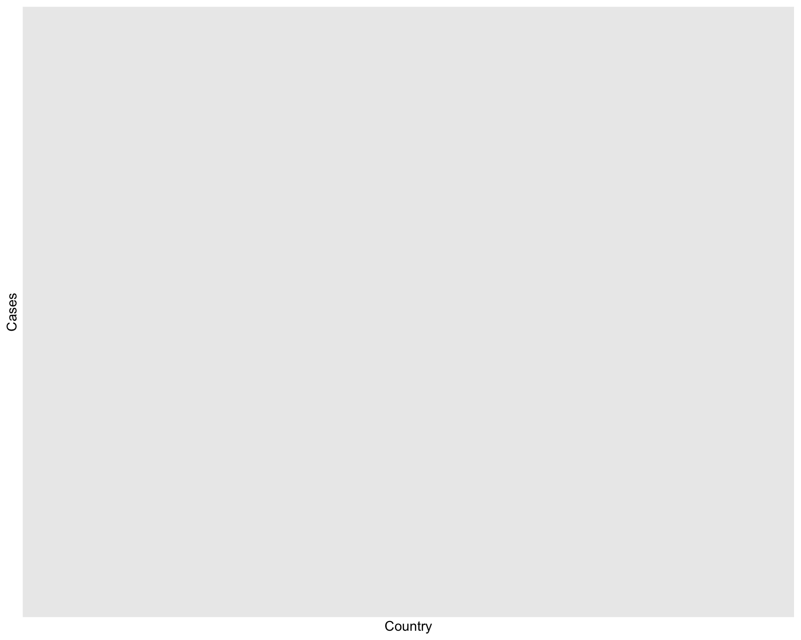
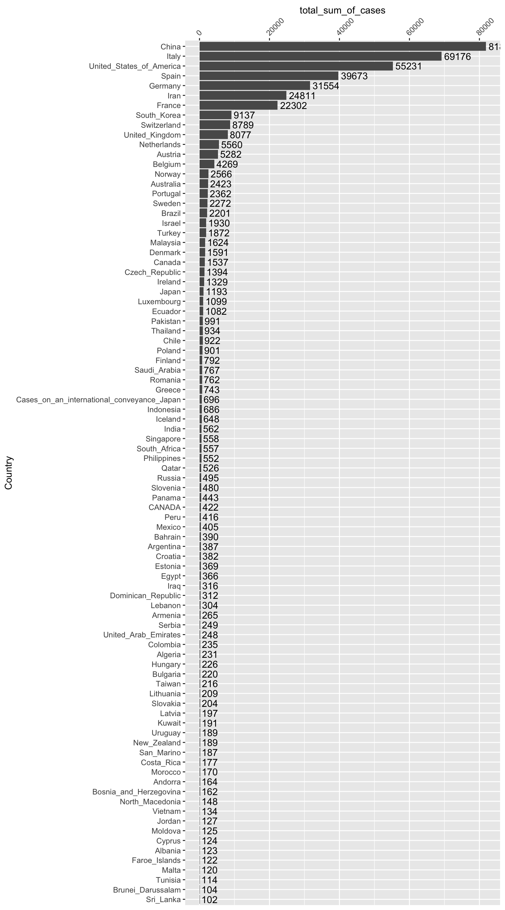
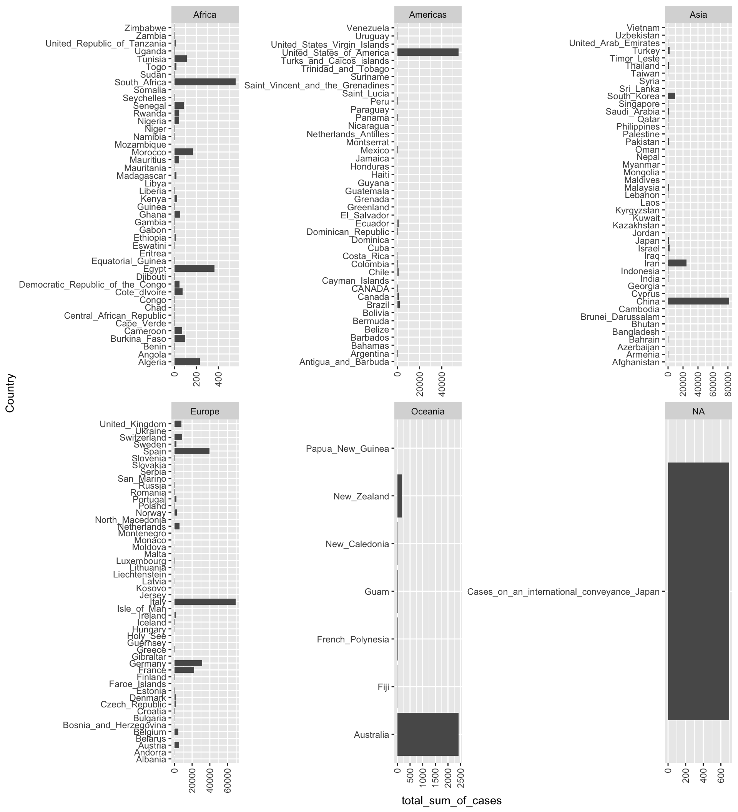
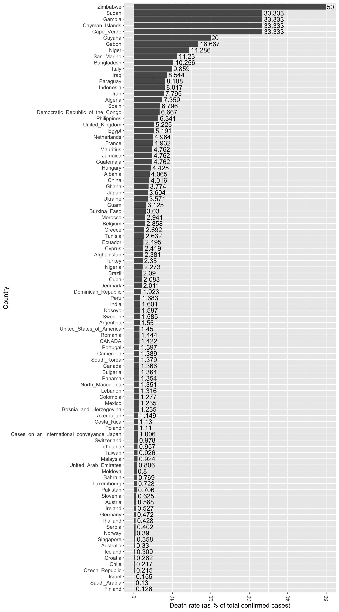
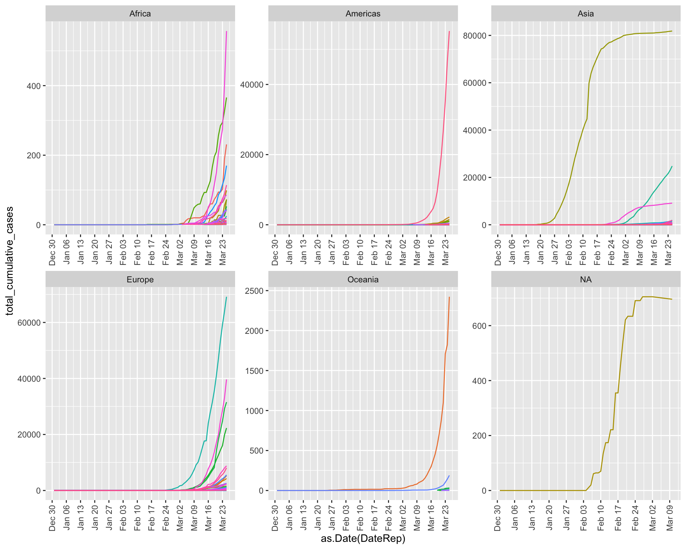

Download and install R from CRAN.
Download and install RStudio, the most widely-used IDE for creating cool things in R.
Open up RStudio. From now on, this will be your gateway to R. RStudio will launch R behind the scenes. In RStudio, you can execute code line-by-line via the “Console” window (not recommended). Or, you can author R scripts or R Notebooks that allow you to save and run multi-line snippets of R code (very much recommended). If you save the code for your analyses within an R script file (*.R), or an R Markdown file (*.Rmd), it makes it easy to return to your work and reproduce your results later.
In RStudio, copy the following lines of code into the “Console” and click [Enter] to run them. This will install the libraries you need to work with the data. You only need to run each of these lines of code once:
install.packages("readxl")
install.packages("httr")
install.packages("tidyverse")
install.packages("ggplot2")
install.packages("countrycode")
install.packages("directlabels")Next, create an R script file: File > New > R Script. From now on, copy the lines of code from this tutorial into your script file and then save off the script file periodically to save a record of your analysis. Once the code is copied into your script file, you can run a line/section of the code by highlighting the section you want to execute and then clicking the **Run*"** button in the upper right-hand corner of the script window. (Or, use [CMD] + [ENTER] as a keyboard shortcut to execute the code.)
Before kicking off the analysis, first copy the following code into your R script file and run it. This loads the libraries you’ve just downloaded into your R environment so you can start using them. You will need to run this code every time you restart your R session:
library(readxl)
library(httr)
library(tidyverse)
library(ggplot2)
library(countrycode)
library(directlabels)The European Center for Disease Prevention and Control hosts a dataset that is automatically updated every day. See the Our World In Data website for a discussion of different sources of COVID-19 data and why this dataset was chosen as a trustworty and accessible source. The ECDC’s data download website has additional information about the data and an example template of how to load the data into R. Use the following code to download and read the data into R:
url <- paste("https://www.ecdc.europa.eu/sites/default/files/documents/COVID-19-geographic-disbtribution-worldwide-", format((Sys.Date() - 1), "%Y-%m-%d"), ".xlsx", sep = "")
# download the dataset from the website to a local temporary file
GET(url, authenticate(":", ":", type="ntlm"), write_disk(filepath <- tempfile(fileext = ".xlsx")))# Alternative: download into the data/ folder
#filepath <- paste(getwd(),"/data/COVID-19-geographic-disbtribution-worldwide-", format(Sys.time(), "%Y-%m-%d"), ".xlsx", sep = "")
#GET(url, authenticate(":", ":", type="ntlm"), write_disk(filepath))
#read the Dataset sheet into R
data <- read_excel(filepath)The data is now loaded into the “Environment” tab in RStudio. Look for the data object listed in there, indicating that the data is now stored in your computer’s memory as a data frame object. Click the blue arrow next to the data object and it will expand to show you all of the columns that are available in the data frame. If you click the icon that looks like a spreadsheet next to the data object, RStudio will open a new tab where you can view the entire dataset. You will notice that one of the columns is labeled “Countries and territories”. This is not great. R hates having spaces in column names, so this could cause us some headaches down the road. To fix this, let’s rename this column to just be called “Country”:
names(data)[7] <- "Country"This dataset has two main metrics:
Cases = the count of newly-diagnosed cases since the previous day’s reporting period for a particular date/country
Deaths = the count of new deaths since the previous day’s reporting period for a particular date/country
Note that these numbers represent are day-by-day counts of new incidents as they are reported. These numbers are very “raw”. There is nothing cumulative about these yet–we will eventually have to compute additional metrics to generate more interesting analyses.
How many new cases have been diagnosed world wide within the last 24 hours?
data %>%
filter(DateRep == Sys.Date()) %>%
summarise(total_sum_of_cases = sum(Cases))How many new cases diagnosed have been diagnosed in each country within the last 24 hours? (Note: Let’s filter for countries that had > 10 new cases, so the chart doesn’t get too crowded.)
data %>% filter(DateRep == Sys.Date() & Cases > 0) %>%
mutate(Country = fct_reorder(Country, desc(Cases))) %>%
filter(Cases > 10) %>%
ggplot(., aes(x=Country, y=Cases)) +
geom_bar(stat="identity") +
geom_text(aes(label = Cases), angle = 90, hjust = -0.1, vjust = 0.5) +
theme(axis.text.x=element_text(angle = 90, hjust = 1, vjust = 0.5))
How many total cases have been diagnosed world wide to date?
data %>%
summarise(total_sum_of_cases = sum(Cases))How many cases have been diagnosed in each country to date? (Note: Let’s filter for countries that have had > 100 cases, so the chart doesn’t get too crowded.)
data %>% group_by(Country) %>%
summarise(total_sum_of_cases = sum(Cases)) %>%
filter(total_sum_of_cases > 100) %>%
mutate(Country = fct_reorder(Country, total_sum_of_cases)) %>%
ggplot(., aes(x=Country, y=total_sum_of_cases)) +
geom_bar(stat="identity") +
geom_text(aes(label = total_sum_of_cases), hjust = -0.1) +
scale_y_continuous(position = "right") +
coord_flip() +
theme(axis.text.x=element_text(angle = 45, hjust = 0, vjust = 0.5))
It would be nice to be able to break down these charts by continent. To do that, we can use an external dataset available as part of the coutrycode package to map the country codes in the GeoId column to their relevant continent values. We can add this into the data frame as a new column called Continent. Note that the GeoId values used in the dataset do not seem entirely consistent with any particular country code schema. So, we will try an iterative approach that combines three different coding schemas (European Central Bank (“ecb”), Eurostat (“eurostat”), and ISO 3-character (“iso3c”)) to look for a match. For any values that remain NA after the first attempt to match, we’ll try to map them using the next codebook, and then the next codebook:
data <- data %>%
mutate(Continent = countrycode(GeoId, origin = "ecb", destination = "continent")) %>%
mutate(Continent = ifelse(is.na(Continent), countrycode(GeoId, origin = "eurostat", destination = "continent"), Continent)) %>%
mutate(Continent = ifelse(is.na(Continent), countrycode(GeoId, origin = "iso3c", destination = "continent"), Continent)) %>%
mutate(Continent = ifelse(GeoId == 'XK', 'Europe', Continent)) # Kosovo is the only country that didn't match in any coding schema, so we'll hand-code it as 'Europe'Now, let’s try the chart again, this time broken down by continent. Do you notice anything interesting?
data %>% group_by(Continent, Country) %>%
summarise(total_sum_of_cases = sum(Cases)) %>%
#mutate(Country = fct_reorder(Country, total_sum_of_cases)) %>% # can't figure out how to order by total_sum_of_cases within each Continent facet :-(
filter(total_sum_of_cases > 0) %>%
ggplot(., aes(x=Country, y=total_sum_of_cases)) +
geom_bar(stat="identity") +
theme(axis.text.x=element_text(angle = 90, hjust = 1, vjust = 0.5)) +
facet_wrap(~Continent, nrow=2, ncol=3, scales="free") +
coord_flip()
Which countries are experiencing the highest death rates (i.e. number of deaths per total confirmed cases)? What do you notice about the countries with very high death rates? Are you surprised at all?
data %>% group_by(Country) %>%
summarise(total_sum_of_cases = sum(Cases),
total_sum_of_deaths = sum(Deaths),
overall_death_rate = round((total_sum_of_deaths / total_sum_of_cases) * 100, 3)) %>%
filter(overall_death_rate > 0) %>%
ungroup() %>%
mutate(Country = fct_reorder(Country, overall_death_rate)) %>%
ggplot(., aes(x=Country, y=overall_death_rate)) +
geom_bar(stat="identity") +
geom_text(aes(label=overall_death_rate), vjust=0.5, hjust = -0.1) +
theme(axis.text.x=element_text(angle = 90, hjust = 1, vjust = 0.5)) +
ylab("Death rate (as % of total confirmed cases)") +
coord_flip()
It is important to note that at least part of the variability in death rate between countries may be attributable to: 1) the country’s rate of testing/case detection, and 2) the differences in which sub-populations were more heavily represented in the country’s initial infected group.
Of course, the question on everyone’s mind now is: “Which countries are ‘flattening the curve’?” To do this, we need to start by calculating the cumulative number of confirmed cases within each country at each date in the dataset:
data <- data %>%
arrange(Country, DateRep) %>%
group_by(Country) %>%
mutate(total_cumulative_cases = cumsum(Cases))Now, let’s visualize the cumulative cases by country over time to see which countries have successfully “flattened their curves”. Does it look like we’re making progress?
ggplot(data, aes(x=as.Date(DateRep), y=total_cumulative_cases, col=Country)) +
geom_line() +
# add a label at the right end of the line (corresponding to sysdate)
# geom_label(data = subset(data, DateRep == as.Date(Sys.Date())),
# aes(label = GeoId, colour = Country, x = as.Date(Sys.Date()), y = total_cumulative_cases),
# hjust = 0.5, size=2.5, label.padding = unit(0.1, "lines")) +
scale_x_date(date_breaks = "1 week", date_labels = "%b %d") +
facet_wrap(~ Continent, scales="free") +
theme(legend.position = "none",
axis.text.x=element_text(angle = 90, hjust = 1, vjust = 0.5))
Bonus Challenge: Identify “turning point” dates for specific countries where they seem to have inflected their curves to become flatter. Then, search online to see: were there any policy changes the country enacted shortly before that time frame that could have contributed to this flattening?
Coronavirus tracked: the latest figures as the pandemic spreads, Financial Times - Very nice visualizations!
91-DIVOC - Nice visualization that lets you flip between log and linear scales to better visualize changes in exponential growth rates
Pueyo, T. (19 March 2020), “Coronavirus: The Hammer and the Dance”, Medium - A very well-written policy/theory piece that makes a good argument for why it is important to act fast in a pandemic
Nace, T. (22 March 2020), “Population Adjusted Coronavirus Cases: Top 10 Countries Compared”, Forbes